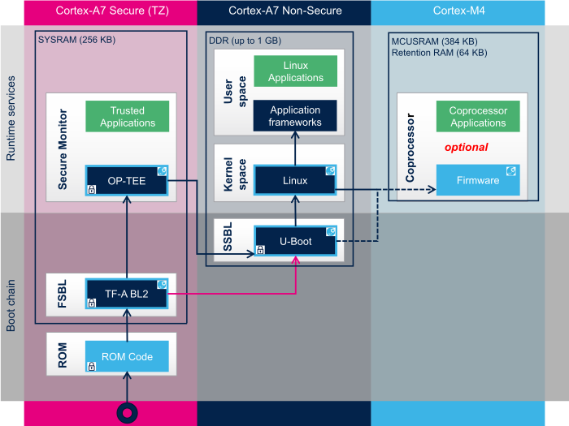

首先，本教程不是一個完整的初學者的教學手冊，需要閱讀人員，自行提前閱讀《【正點原子】STM32MP1嵌入式Linux驅動開發指南V2.0》和熟悉STM32相關工具的基本操作。
其次，本文的開發環境基於Windows 11 22H2 版本的WSL2 Ubuntu 22.04進行搭建，這樣的好處是直接利用Hyper-V的高效率和文件操作不需要自行設置，加快開發環境部署。
1 準備移植程序和工具¶
我們在移植的過程中主要用到以下程序和工具：
其中我們需要從【STM32MP1STARTER】獲取參考用的TSV，因爲新版本的固件名稱已經和正點原子的手冊中不一樣，變化比較大；然後由於現在各大廠商提供的支持越來越好，已經提供對應的開發工具包，我個人覺得沒有必要自己去一個個安裝，搭建開發環境，故在本教程中需要用到【Yocto_SDKx86】，進行開發環境的搭建；最後就是我們需要的相關源代碼包【STM32MP1Dev】和下載工具【stm32cubeprog】。
2 啓動流程和一些不明確的地方¶
2.1 啓動流程未清楚的地方¶

如上圖所示，STM32MP157系列支持兩種啓動方式，一種是安全啓動，一種是非安全啓動，但是找了許多資料，沒有查詢到第二種的方式實現，目前的資料都是第一種方式，通過 ROM —> FSBL —> OP-TEE —> U-boot —> Kernal —> USer,本教程也是基於這種方式移植。
2.2 關於STM32MP157D在800MHz運行下的情況¶
按照STM32官方的分立電源手冊【AN5256 STM32MP151、STM32MP153和STM32MP157分立电源硬件集成】中的描述，個人的初略理解，STM32MP157如果要想在800Mhz運行，VDDCore應該在1.35V，但奇怪的是正點原子的板子只提供了1.2V，可測試固件可以跑到800MHz，所以現在沒有理解怎麽實現的。
3 配置開發環境¶
3.1 拷貝文件到工作目錄並解壓文件¶
在工作目录（stm32mp1-openstlinux-6.1-yocto-mickledore-mp1-v23.06.21）准备好下载好的三个压缩包並输入下列命令进行解压
$ tar -xvzf en.SOURCES-stm32mp1-openstlinux-5.15-yocto-kirkstone-mp1-v22.06.15.tar.xz
$ tar -xvzf en.SDK-x86_64-stm32mp1-openstlinux-5.15-yocto-kirkstone-mp1-v22.06.15.tar.xz
$ tar -xvzf en.FLASH-stm32mp1-openstlinux-5.15-yocto-kirkstone-mp1-v22.06.15.tar.xz
得到stm32mp1-openstlinux-6.1-yocto-mickledore-mp1-v23.06.21文件夹，里面就是源码、工具和镜像包。
stm32mp1-openstlinux-6.1-yocto-mickledore-mp1-v23.06.21
├─images #官方开发板镜像包
│ └─stm32mp1
│ └─flashlayout_st-image-weston #參考flashlayout TSV
│ ├─deleteall #擦除flashlayout TSV
│ ├─extensible #用於SD卡flashlayout TSV
│ └─optee #正常下載flashlayout TSV
├─sdk #交叉编译工具链
└─sources #源码
└─arm-ostl-linux-gnueabi
├─FIP_artifacts #FIP编译生成的结果存放目录
├─gcnano-driver-stm32mp-6.4.13-stm32mp-r1-r0 #一个内核模块源码
├─linux-stm32mp-6.1.28-stm32mp-r1-r0 #Linux源码及补丁
├─optee-os-stm32mp-3.19.0-stm32mp-r1-r0 #OPTEE源码及补丁
├─tf-a-stm32mp-v2.8.6-stm32mp-r1-r0 #TF-A源码及补丁
└─u-boot-stm32mp-v2022.10-stm32mp-r1-r0 #u-boot源码及补丁
3.2 安裝編譯工具鏈¶
进入到sdk目录下，輸入下列命令進行安裝
$ chmod +x ./st-image-weston-openstlinux-weston-stm32mp1-x86_64-toolchain-4.2.1-openstlinux-6.1-yocto-mickledore-mp1-v23.06.21.sh
$ ./st-image-weston-openstlinux-weston-stm32mp1-x86_64-toolchain-4.2.1-openstlinux-6.1-yocto-mickledore-mp1-v23.06.21.sh
過程中的提示基本都默認即可。
安裝完成后，可以用以下命令測試下，輸入下令命令是否。
$ source /opt/st/stm32mp1/4.2.1-openstlinux-6.1-yocto-mickledore-mp1-v23.06.21/environment-setup-cortexa7t2hf-neon-vfpv4-ostl-linux-gnueabi
$ arm-ostl-linux-
顯示如下信息，説明配置成功。
$ arm-ostl-linux-
arm-ostl-linux-gnueabi-addr2line arm-ostl-linux-gnueabi-ld.gold arm-ostl-linux-musl-gcc-nm
arm-ostl-linux-gnueabi-ar arm-ostl-linux-gnueabi-lto-dump arm-ostl-linux-musl-gcc-ranlib
arm-ostl-linux-gnueabi-as arm-ostl-linux-gnueabi-nm arm-ostl-linux-musl-gcov
arm-ostl-linux-gnueabi-c++filt arm-ostl-linux-gnueabi-objcopy arm-ostl-linux-musl-gcov-dump
arm-ostl-linux-gnueabi-cpp arm-ostl-linux-gnueabi-objdump arm-ostl-linux-musl-gcov-tool
arm-ostl-linux-gnueabi-dwp arm-ostl-linux-gnueabi-ranlib arm-ostl-linux-musl-gdb
arm-ostl-linux-gnueabi-elfedit arm-ostl-linux-gnueabi-readelf arm-ostl-linux-musl-gdb-add-index
arm-ostl-linux-gnueabi-g++ arm-ostl-linux-gnueabi-size arm-ostl-linux-musl-gprof
arm-ostl-linux-gnueabi-gcc arm-ostl-linux-gnueabi-strings arm-ostl-linux-musl-ld
arm-ostl-linux-gnueabi-gcc-ar arm-ostl-linux-gnueabi-strip arm-ostl-linux-musl-ld.bfd
arm-ostl-linux-gnueabi-gcc-nm arm-ostl-linux-musl-addr2line arm-ostl-linux-musl-ld.gold
arm-ostl-linux-gnueabi-gcc-ranlib arm-ostl-linux-musl-ar arm-ostl-linux-musl-lto-dump
arm-ostl-linux-gnueabi-gcov arm-ostl-linux-musl-as arm-ostl-linux-musl-nm
arm-ostl-linux-gnueabi-gcov-dump arm-ostl-linux-musl-c++filt arm-ostl-linux-musl-objcopy
arm-ostl-linux-gnueabi-gcov-tool arm-ostl-linux-musl-cpp arm-ostl-linux-musl-objdump
arm-ostl-linux-gnueabi-gdb arm-ostl-linux-musl-dwp arm-ostl-linux-musl-ranlib
arm-ostl-linux-gnueabi-gdb-add-index arm-ostl-linux-musl-elfedit arm-ostl-linux-musl-readelf
arm-ostl-linux-gnueabi-gprof arm-ostl-linux-musl-g++ arm-ostl-linux-musl-size
arm-ostl-linux-gnueabi-ld arm-ostl-linux-musl-gcc arm-ostl-linux-musl-strings
arm-ostl-linux-gnueabi-ld.bfd arm-ostl-linux-musl-gcc-ar arm-ostl-linux-musl-strip
$ arm-ostl-linux-
4 TF-A 2.8移植¶
4.1 解壓源碼並編譯測試¶
進入之前準備好的源碼目錄tf-a-stm32mp-v2.8.6-stm32mp-r1-r0，解壓並打好補丁文件。可以參考README.HOW_TO.txt文件，裡面說了怎麼解壓和打補丁，並且還說了如何編譯。
#解压源码
$ tar -xvf tf-a-stm32mp-v2.8.6-stm32mp-r1-r0.tar.xz
#进入源码目录
$ cd tf-a-stm32mp-v2.8.6-stm32mp-r1/
#打补丁
$ for p in `ls -1 ../*.patch`; do patch -p1 < $p; done
解壓好源碼，我們在源碼目錄執行以下命令完成編譯。DEPLOYDIR=$FIP_DEPLOYDIR_ROOT/arm-trusted-firmware是TF-A編譯結果存放的目錄，如果不設置就會在上一級產生deploy目錄存放編譯結果，同級目錄下生成的build目錄存放編譯中間文件。
#设置编译器
$ source /opt/st/stm32mp1/4.2.1-openstlinux-6.1-yocto-mickledore-mp1-v23.06.21/environment-setup-cortexa7t2hf-neon-vfpv4-ostl-linux-gnueabi
#设置FIP目录
$ export FIP_DEPLOYDIR_ROOT=$PWD/../../FIP_artifacts
#编译
$ make -f $PWD/../Makefile.sdk all
如果配置得當，會順利編譯完成，無報錯。
4.2 處理Makefile.sdk¶
備份 Makefile.sdk 以用於防止改錯和參考如何寫
$ cp -ivp Makefile.sdk Makefile.sdk.backup
然後用 VS Code 打開 Makefile.sdk 找到如下行
1 2 3 4 5 6 7 8 9 10 11 12 13 14 15 16 17 18 | |
根據實際需要改成自己要用的，這個名稱要和後面的設備樹名稱對應，下面以後續要用的設備樹名stm32mp157d-atk.dts 為例，并且編譯器參數保持默認。
1 2 3 4 5 6 7 8 9 10 11 12 13 14 15 16 17 18 | |
也可以根據實際需要去掉不需要編譯鏡像選項，後續我們將要使用的有TF_A_DEVICETREE_optee, TF_A_DEVICETREE_emmc, TF_A_DEVICETREE_usb這三個鏡像。
4.3 源碼移植¶
4.3.1 創建stm32mp157d-atk.dts相關文件¶
由於正點原子的 STM32MP157D 的開發板是基於 STM32MP157D-EV1 進行改板的，又由於 stm32mp157d-ev1.dts 中引用 stm32mp157d-ed1.dts的文件，所以我們以ed1的文件為stm32mp157d-atk.dts基底，後續將ev1中的差別内容融合到stm32mp157d-atk.dts。
$ cd tf-a-stm32mp-v2.8.6-stm32mp-r1\fdts
$ cp -ivp stm32mp157d-ed1.dts stm32mp157d-atk.dts
4.3.2 拼接设备树文件¶
stm32mp157d-ev1.dts 内容如下所示，需要將fmc節點以後代碼複製到stm32mp157d-atk.dts文件結尾。
1 2 3 4 5 6 7 8 9 10 11 12 13 14 15 16 17 18 19 20 21 22 23 24 25 26 27 28 29 30 31 32 33 34 35 36 37 38 39 40 41 42 43 44 45 46 47 48 49 50 51 52 53 54 | |
stm32mp157d-atk.dts文件中起始節點融合為如下代碼：
1 2 3 4 5 6 7 8 9 10 11 12 13 14 15 16 17 18 | |
4.3.3 修改电源设备树¶
在stm32mp157d-atk.dts文件中，刪除 i2c4 節點内的 pmic: stpmic@33的子節點全部内容：
1 2 3 4 5 6 7 8 9 10 11 12 13 14 15 16 17 18 19 20 21 22 23 24 25 26 27 28 29 30 31 32 33 34 35 36 37 38 39 40 41 42 43 44 45 46 47 48 49 50 51 52 53 54 55 56 57 58 59 60 61 62 63 64 65 66 67 68 | |
刪除后代碼如下所示：
1 2 3 4 5 6 7 8 | |
然後在起始節點中增加分立電源配置，代碼如下：
1 2 3 4 5 6 7 8 9 10 11 12 13 14 15 16 17 18 19 20 21 22 23 24 25 26 27 28 29 30 31 32 33 34 35 36 37 38 39 40 41 42 43 44 45 46 47 48 49 50 51 52 53 54 55 56 57 58 59 60 61 62 | |
最後需要在平臺配置文件plat/st/stm32mp1/stm32mp1_def.h中修改分立電源數量:
1 2 3 | |
4.3.4 修改EMMC设备树¶
這個部分沒有變化，完全參考《【正點原子】STM32MP1嵌入式Linux驅動開發指南V2.0》中操作即可，修改前的代碼如下所示：
1 2 3 4 5 6 7 8 9 10 11 12 13 14 15 16 17 18 19 20 21 22 23 24 25 26 27 28 29 | |
修改后的代碼如下所示：
1 2 3 4 5 6 7 8 9 10 11 12 13 14 15 16 17 18 19 20 | |
4.4 修改Flashlayout文件¶
由於正點原子的 STM32MP157D 的開發板是基於 STM32MP157D-EV1 進行改板的，所以在上述 Flashlayout 文件夾中找到 optee 文件夾中找到 “FlashLayout_emmc_stm32mp157d-ev1-optee.tsv” 複製到一個下載目錄中。
#Opt Id Name Type IP Offset Binary
- 0x01 fsbl-boot Binary none 0x0 arm-trusted-firmware/tf-a-stm32mp157d-ev1-usb.stm32
- 0x03 fip-boot FIP none 0x0 fip/fip-stm32mp157d-ev1-optee.bin
P 0x04 fsbl1 Binary mmc1 boot1 arm-trusted-firmware/tf-a-stm32mp157d-ev1-emmc.stm32
P 0x05 fsbl2 Binary mmc1 boot2 arm-trusted-firmware/tf-a-stm32mp157d-ev1-emmc.stm32
P 0x06 metadata1 FWU_MDATA mmc1 0x00080000 arm-trusted-firmware/metadata.bin
P 0x07 metadata2 FWU_MDATA mmc1 0x00100000 arm-trusted-firmware/metadata.bin
P 0x08 fip-a FIP mmc1 0x00180000 fip/fip-stm32mp157d-ev1-optee.bin
PED 0x09 fip-b FIP mmc1 0x00580000 none
PED 0x0A u-boot-env ENV mmc1 0x00980000 none
P 0x10 bootfs System mmc1 0x00A00000 st-image-bootfs-openstlinux-weston-stm32mp1.ext4
P 0x11 vendorfs FileSystem mmc1 0x04A00000 st-image-vendorfs-openstlinux-weston-stm32mp1.ext4
P 0x12 rootfs FileSystem mmc1 0x05A00000 st-image-weston-openstlinux-weston-stm32mp1.ext4
P 0x13 userfs FileSystem mmc1 0xC5A00000 st-image-userfs-openstlinux-weston-stm32mp1.ext4
在測試TF-A的移植中我們只用第一行和第二行即可，即USB模擬串口的TF-A的固件下載到STM32MP157中即可測試。
4.5 編譯並下載測試¶
4.5.1 編譯¶
由於TF-A的SP-MIN是被TF-A的BL2加載併運行的，STM32MP157使用了FIP將BL32(SP-MIN)和BL33(U-Boot)打包在一起，我們需要復制一份U-Boot改成自己的開發闆。
#進入FIP目錄下的u-boot目錄
$ cd ../../FIP_artifacts/u-boot/
#複製U-boot
$ cp u-boot-stm32mp157d-ev1.dtb u-boot-stm32mp157d-atk.dtb
#返回TF-A源碼目錄
$ cd ../../tf-a-stm32mp-v2.8.6-stm32mp-r1-r0/tf-a-stm32mp-v2.8.6-stm32mp-r1/
#編譯
$ make -f $PWD/../Makefile.sdk all
編譯完成后會顯示如下結尾：
[fiptool] Create fip-stm32mp157d-atk-optee.bin fip binary into 'FIP_DEPLOYDIR_FIP' folder...
[fiptool] Done
4.5.2 下載測試¶
flashlayout如下所示：
#Opt Id Name Type IP Offset Binary
- 0x01 fsbl-boot Binary none 0x0 arm-trusted-firmware/tf-a-stm32mp157d-atk-usb.stm32
- 0x03 fip-boot FIP none 0x0 fip/fip-stm32mp157d-atk-trusted.bin
如果不會編寫，請參考 STM32CubeProgrammer_flashlayout WIKI。
用STM32CubeProg打開燒寫腳本，註意二進制文件把目錄設置對，設置好闆子併連接OTG和串口，點擊下載。板子一直重啟，那是因為U-boot不對。從串口打印信息上可以看到BL2把BL32(SP-MIN)啟動起來，SP-MIN正常運行，最終U-Boot啟動。
NOTICE: CPU: STM32MP157DAA Rev.Z<\r><\n>
NOTICE: Model: Alientek STM32MP157D daughter<\r><\n>
INFO: Reset reason (0x15):<\r><\n>
INFO: Power-on Reset (rst_por)<\r><\n>
INFO: FCONF: Reading TB_FW firmware configuration file from: 0x2ffe2000<\r><\n>
INFO: FCONF: Reading firmware configuration information for: stm32mp_io<\r><\n>
INFO: Using USB<\r><\n>
INFO: Instance 2<\r><\n>
INFO: Boot used partition fsbl1<\r><\n>
NOTICE: BL2: v2.8-stm32mp1-r1.0(debug):()<\r><\n>
NOTICE: BL2: Built : 14:09:42, Jul 11 2023<\r><\n>
INFO: BL2: Doing platform setup<\r><\n>
INFO: RAM: DDR3-DDR3L 32bits 533000kHz<\r><\n>
INFO: Memory size = 0x40000000 (1024 MB)<\r><\n>
INFO: DFU USB START...<\r><\n>
INFO: phase ID :3, Manifestation 3 at c714d1fa<\r><\n>
INFO: Send detach request<\r><\n>
INFO: Receive DFU Detach<\r><\n>
INFO: DFU USB STOP...<\r><\n>
INFO: BL2: Loading image id 1<\r><\n>
INFO: Loading image id=1 at address 0x2ffff000<\r><\n>
INFO: Image id=1 loaded: 0x2ffff000 - 0x2ffff1ea<\r><\n>
INFO: FCONF: Reading FW_CONFIG firmware configuration file from: 0x2ffff000<\r><\n>
INFO: FCONF: Reading firmware configuration information for: dyn_cfg<\r><\n>
INFO: FCONF: Reading firmware configuration information for: stm32mp1_firewall<\r><\n>
INFO: BL2: Loading image id 4<\r><\n>
INFO: Loading image id=4 at address 0xfe000000<\r><\n>
INFO: Image id=4 loaded: 0xfe000000 - 0xfe00001c<\r><\n>
INFO: OPTEE ep=0xfe000000<\r><\n>
INFO: OPTEE header info:<\r><\n>
INFO: magic=0x4554504f<\r><\n>
INFO: version=0x2<\r><\n>
INFO: arch=0x0<\r><\n>
INFO: flags=0x0<\r><\n>
INFO: nb_images=0x1<\r><\n>
INFO: BL2: Loading image id 8<\r><\n>
INFO: Loading image id=8 at address 0xfe000000<\r><\n>
INFO: Image id=8 loaded: 0xfe000000 - 0xfe035b68<\r><\n>
INFO: BL2: Skip loading image id 9<\r><\n>
INFO: BL2: Loading image id 2<\r><\n>
INFO: Loading image id=2 at address 0xc0500000<\r><\n>
INFO: Image id=2 loaded: 0xc0500000 - 0xc0521628<\r><\n>
INFO: BL2: Skip loading image id 16<\r><\n>
INFO: BL2: Loading image id 5<\r><\n>
INFO: Loading image id=5 at address 0xc0100000<\r><\n>
INFO: Image id=5 loaded: 0xc0100000 - 0xc01f5d3c<\r><\n>
NOTICE: BL2: Booting BL32<\r><\n>
INFO: Entry point address = 0xfe000000<\r><\n>
INFO: SPSR = 0x1d3<\r><\n>
I/TC: Early console on UART#4<\r><\n>
I/TC: <\r><\n>
I/TC: Embedded DTB found<\r><\n>
I/TC: OP-TEE version: 3.19.0-dev (gcc version 12.2.0 (GCC)) #1 Fri Oct 14 19:00:05 UTC 2022 arm<\r><\n>
I/TC: WARNING: This OP-TEE configuration might be insecure!<\r><\n>
I/TC: WARNING: Please check https://optee.readthedocs.io/en/latest/architecture/porting_guidelines.html<\r><\n>
I/TC: Primary CPU initializing<\r><\n>
E/TC:0 0 Panic<\r><\n>
10 结语¶
關於具體的流程及操作，我在這裡就不多做敘述了，官方文檔和正點原子的手冊中說的已經非常清楚。本次移植過程也是個人摸索得出的，如果有不盡完善的地方，歡迎您提出，我進行驗證更正。